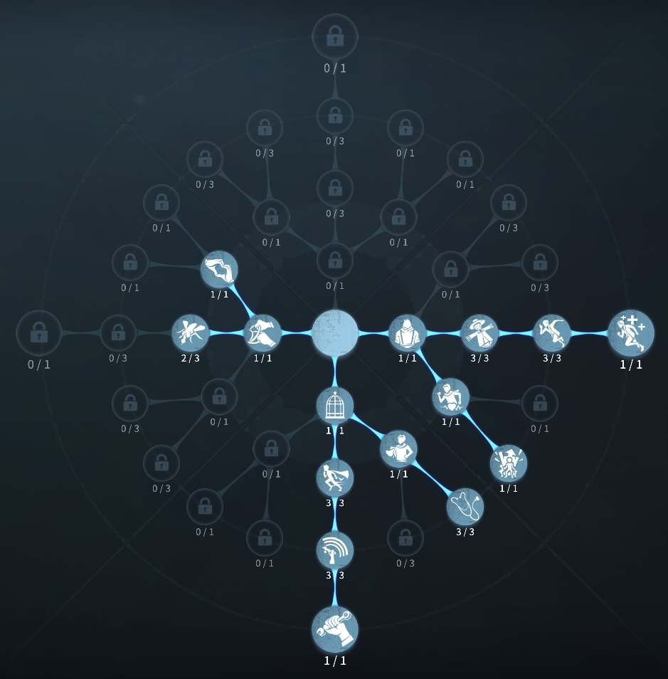
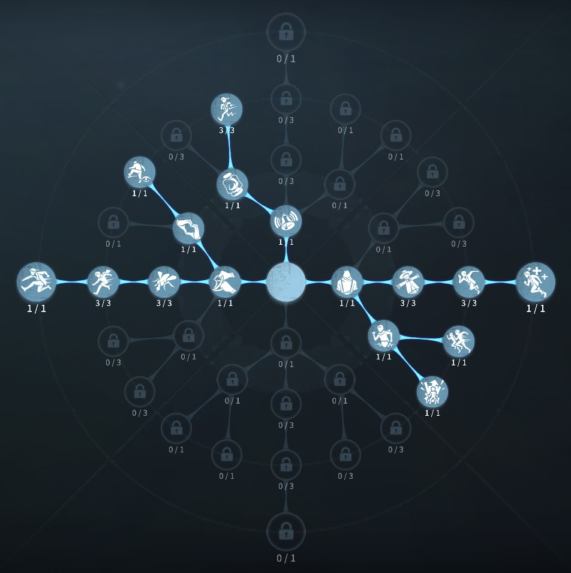

人形師の評価
ルイ君状態で時間と軽減ダメージが担保
外在特質と特徴
特質1:「ルイ」
・スキルを発動すると、0.5ダメージ負傷する代わりに8秒間「ルイ」形態になる。 「ルイ」形態では累計1.5ダメージ分まで無効化できる。ただし、その場合の通常攻撃の攻撃硬直が10％減少する。8秒経過する、ダメージを既定値分を超えると「ルイ」形態は終了する。・ロケットチェアに拘束されているサバイバーの周囲20m以内ではルイの減少速度が100％上昇する。
・「ルイ」形態中に1度だけ、不感効果を得る。不感効果中、移動できなくなるがダメージ、抑制効果を防ぐことができる。
特質2:柔軟パーツ
・恐怖値が増加する度、8秒間移動速度8％上昇。特質3:血肉無用
・他のサバイバーからの治療を受けられない。（ダウン治療は可能）・他のサバイバーを治療する速度が30％低下する。
・他のサバイバーのダメージを0.5ダメージずつ回復することができ、回復に成功すると人形師のダメージも0.5ダメージ回復する。治療を受けたサバイバーの次の治療に必要な時間が10％増加する。
・人形師は治療対象の負傷ダメージ量が1未満でも治療できる。治療時間は通常の治療と同じ時間を要する。
特徴
1ダメージを0.5ダメージに抑えられる。1.5ダメージだと負傷状態2ダメージだと1.5ダメージ負傷状態となる。
通電後、引き留める攻撃でも一撃耐えることができる。
0.5ダメージハンターには要注意！
不覚によってフライホイールと同等の効果を得られる。
基本的な立ち回り方
1. 追われた時
ハンターの攻撃前には必ずルイ君状態になろう
また、0.5ダメージと通常をもらうと負傷状態になり本来ルイ君状態が3回使えるが2回しか使えなくなる。
0.5ダメージには特に気を付けよう！
よけられないダメージの場合、不覚でダメージを防ごう。
ルイ君状態で殴ってこないハンターには板までいき、ルイ君が終わる寸前で板を倒して次のポジションへと移動しよう。
2. 追われない時
解読に専念しよう！
ルイ君状態での肉壁を挟むのも強力、通電前で肉壁要因で派遣しよう！
解読が回っていない場合肉壁より解読しよう！
おすすめの内在人格
危機一髪型人格
この内在人格は、医師に振ることで人形師デバフ治療する時間を短くする人格

膝蓋腱反射型人格
この内在人格は、防衛反応を最大化することで負傷してから強い人形師を生かした人格


みんなのコメント